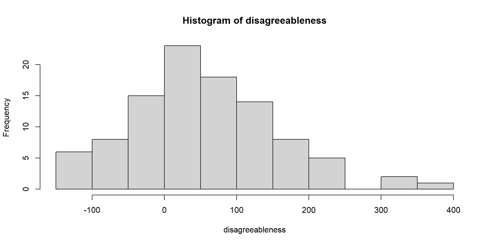
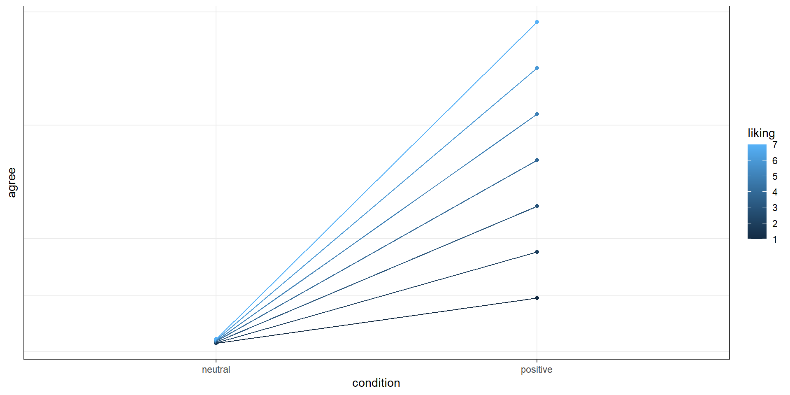
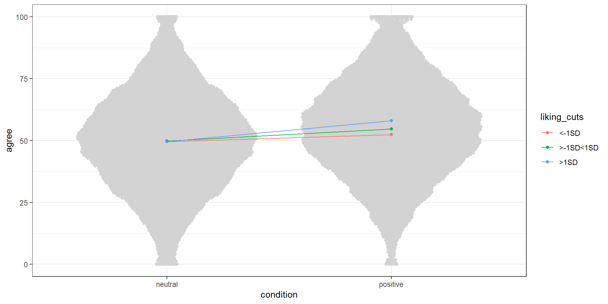
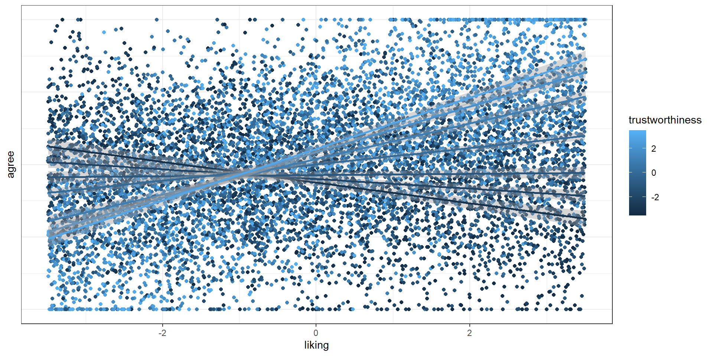

Call:
lm(formula = disagreeableness ~ age)
Residuals:
Min 1Q Median 3Q Max
-1.959e-14 -6.098e-16 3.027e-16 8.871e-16 4.968e-15
Coefficients:
Estimate Std. Error t value Pr(>|t|)
(Intercept) 5.684e-15 7.775e-16 7.311e+00 7.25e-11 ***
age 1.000e+00 1.454e-17 6.877e+16 < 2e-16 ***
---
Signif. codes: 0 '***' 0.001 '**' 0.01 '*' 0.05 '.' 0.1 ' ' 1
Residual standard error: 2.489e-15 on 98 degrees of freedom
Multiple R-squared: 1, Adjusted R-squared: 1
F-statistic: 4.729e+33 on 1 and 98 DF, p-value: < 2.2e-16Continuous predictors
Power analysis through simulation in R
Niklas Johannes
Takeaways
- Understand that continuous predictors are just another case of the linear model
- Extend this understanding to continuous (by categorical) interactions
- Be able to translate that extension to generating data
Back to the linear model
So far our predictors have been categorical. Say we have two groups predicting an outcome. If our predictor is 0:
\[\begin{align} & y = \beta_0 + \beta_1x\\ & y = \beta_0 + beta_1 \times 0\\ & y = \beta_0 \end{align}\]If it’s 1:
\[\begin{align} & y = \beta_0 + \beta_1x\\ & y = \beta_0 + beta_1 \times 1\\ & y = \beta_0 + beta_1 \end{align}\]Changing \(x\)
Nothing new: We’re basically looking at what happens if \(x\) goes up by 1. So if our measure isn’t categorical (aka dummy coded), but continuous, we’re asking the same question. Only now, \(x\) can be more than 0/1.
\(y = \beta_0 + \beta_1x\)
Full range of \(x\)
If we assume linearity, then getting \(y\) is easy. Assume we predict disagreeableness from age. With each year people grow older, they become 1 point more disagreeable on a 100-point scale. (And when they’re 0 years old, they’re also 0 disagreeable.)
\[\begin{align} & disagreeableness = \beta_0 + \beta_1 \times age\\ & disagreeableness = 0 + 1 \times age \end{align}\]Now getting the score for someone aged 50 is trivial:
\(disagreeableness = 0 + 1 \times 50\)
Simulating this process is trivial
We get our age, put it into the formula, and we have our outcome.
Perfect fit
Adding error
If there’s lots of error, it’ll be harder to separate signal (aka our true 1-point effect) from noise (the total variation in our outcome).
Call:
lm(formula = disagreeableness ~ age)
Residuals:
Min 1Q Median 3Q Max
-264.960 -75.457 6.974 69.968 212.830
Coefficients:
Estimate Std. Error t value Pr(>|t|)
(Intercept) 7.8891 34.3198 0.230 0.819
age 0.5369 0.6419 0.836 0.405
Residual standard error: 109.9 on 98 degrees of freedom
Multiple R-squared: 0.007087, Adjusted R-squared: -0.003045
F-statistic: 0.6995 on 1 and 98 DF, p-value: 0.405Psst, scale
Adding this much error will bring our outcome measure out of bounds. For a proper simulation where we’re interested in the data generating process, we need to deal with this (by truncating etc.).

That’s it, really
From the linear model, it doesn’t matter on what level our predictor is. Categorical or continuous, we can simulate any outcome with this formula–including multiple predictors and interactions between different levels of predictors.
Let’s assume number of relatives living close-by is also causing disagreeableness:
Two independent effects
Call:
lm(formula = disagreeableness ~ age + relatives)
Residuals:
Min 1Q Median 3Q Max
-27.6188 -5.8441 0.6991 6.5781 29.3758
Coefficients:
Estimate Std. Error t value Pr(>|t|)
(Intercept) -3.96855 3.63094 -1.093 0.2771
age 1.07027 0.05184 20.646 <2e-16 ***
relatives 0.87174 0.39420 2.211 0.0294 *
---
Signif. codes: 0 '***' 0.001 '**' 0.01 '*' 0.05 '.' 0.1 ' ' 1
Residual standard error: 9.487 on 97 degrees of freedom
Multiple R-squared: 0.8147, Adjusted R-squared: 0.8109
F-statistic: 213.3 on 2 and 97 DF, p-value: < 2.2e-16Varying effect sizes
What if we believe the effect of age is smaller, but that of number of relatives much larger. No problem, we just adjust our betas. Say each year only contributes 0.25 higher grumpiness, but each extra relative contributes 5 points on grumpiness.
\[\begin{align} & disagreeableness = \beta_0 + \beta_1 \times age + \beta_2relatives\\ & disagreeableness = 0 + 0.25 \times age + 5 \times relatives \end{align}\]In R
disagreeableness <- 0 + 0.25*age + 5*relatives + error
summary(lm(disagreeableness ~ age + relatives))
Call:
lm(formula = disagreeableness ~ age + relatives)
Residuals:
Min 1Q Median 3Q Max
-27.6188 -5.8441 0.6991 6.5781 29.3758
Coefficients:
Estimate Std. Error t value Pr(>|t|)
(Intercept) -3.96855 3.63094 -1.093 0.277
age 0.32027 0.05184 6.178 1.52e-08 ***
relatives 4.87174 0.39420 12.358 < 2e-16 ***
---
Signif. codes: 0 '***' 0.001 '**' 0.01 '*' 0.05 '.' 0.1 ' ' 1
Residual standard error: 9.487 on 97 degrees of freedom
Multiple R-squared: 0.6498, Adjusted R-squared: 0.6426
F-statistic: 90 on 2 and 97 DF, p-value: < 2.2e-16That’s the data generating process
In our simulation, we yet again make our assumptions explicit about how the data are generated: According to this linear model and our inputs (aka numbers). Error adds uncertainty to our data generating process. It specifies that our linear model doesn’t 100% explain the causal structures and that there are influences on our outcome that we haven’t accounted for.
About that intercept
\(disagreeableness = \beta_0 + \beta_1 \times age + \beta_2relatives\)
Now the intercept is disagreeableness when both age and number of relatives are 0. Maybe 0 age doesn’t make a lot of sense, so let’s center that variable.
Now the meaning intercept changes: Disagreeableness at average age and 0 relatives living close-by. Easier to have an intuition for.
In R
The effect for age doesn’t change, but the interpretation of the intercept does: Now it’s the disagreeableness when there’s no relatives and average age.
centered_age <- scale(age, center = TRUE, scale = FALSE)
summary(lm(disagreeableness ~ centered_age + relatives))
Call:
lm(formula = disagreeableness ~ centered_age + relatives)
Residuals:
Min 1Q Median 3Q Max
-27.6188 -5.8441 0.6991 6.5781 29.3758
Coefficients:
Estimate Std. Error t value Pr(>|t|)
(Intercept) 12.66630 2.25158 5.626 1.79e-07 ***
centered_age 0.32027 0.05184 6.178 1.52e-08 ***
relatives 4.87174 0.39420 12.358 < 2e-16 ***
---
Signif. codes: 0 '***' 0.001 '**' 0.01 '*' 0.05 '.' 0.1 ' ' 1
Residual standard error: 9.487 on 97 degrees of freedom
Multiple R-squared: 0.6498, Adjusted R-squared: 0.6426
F-statistic: 90 on 2 and 97 DF, p-value: < 2.2e-16Simulate power
n <- 100
effect <- 0.10
runs <- 1000
pvalues <- NULL
for (i in 1:runs) {
age <- rnorm(n, 50, 20)
centered_age <- scale(age, center = TRUE, scale = FALSE)
error <- rnorm(n, 0, 10)
disagreeableness <- 50 + effect*centered_age + error
disagreeableness <- ifelse(disagreeableness > 100, 100, disagreeableness)
disagreeableness <- ifelse(disagreeableness < 0, 0, disagreeableness)
m <- summary(lm(disagreeableness ~ centered_age))
pvalues[i] <- broom::glance(m)$p.value
}
sum(pvalues < 0.05) / length(pvalues)[1] 0.525Standardized effects?
What if we want to work with standardized effects? Remember that a standardized effect is just an expression of standard deviation units? So we can standardize our variables and voila: \(r\).
Let’s compare
[1] 0.473261
Call:
lm(formula = stan_dis ~ stan_age)
Residuals:
Min 1Q Median 3Q Max
-2.17441 -0.69351 0.05916 0.67471 2.54917
Coefficients:
Estimate Std. Error t value Pr(>|t|)
(Intercept) -1.588e-18 8.854e-02 0.000 1
stan_age 4.733e-01 8.899e-02 5.318 6.61e-07 ***
---
Signif. codes: 0 '***' 0.001 '**' 0.01 '*' 0.05 '.' 0.1 ' ' 1
Residual standard error: 0.8854 on 98 degrees of freedom
Multiple R-squared: 0.224, Adjusted R-squared: 0.2161
F-statistic: 28.28 on 1 and 98 DF, p-value: 6.608e-07Not super clean
This doesn’t give us a lot of control over the standardized effect size. How about we just start off with standardized variables? If we want \(r\) = 0.20, we can do that as follows:
\(r\) = 0.20?
Call:
lm(formula = stan_dis ~ stan_age)
Residuals:
Min 1Q Median 3Q Max
-1.18003 -0.20496 -0.00331 0.20734 1.14808
Coefficients:
Estimate Std. Error t value Pr(>|t|)
(Intercept) -0.0008077 0.0030056 -0.269 0.788
stan_age 0.2063262 0.0029956 68.877 <2e-16 ***
---
Signif. codes: 0 '***' 0.001 '**' 0.01 '*' 0.05 '.' 0.1 ' ' 1
Residual standard error: 0.3005 on 9998 degrees of freedom
Multiple R-squared: 0.3218, Adjusted R-squared: 0.3217
F-statistic: 4744 on 1 and 9998 DF, p-value: < 2.2e-16Wait a second
Why isn’t the effect as we specified?
Because we didn’t standardize
We created the standardized version of disagreeableness with
That means the variable isn’t actually standardized:
How do we fix this?
Luckily, we encountered a way to simulate variables, including their means, standard deviations, and correlations: The variance-covariance matrix. Now, we just make sure the means are 0 and standard deviations are 1.
Correlation matrix
\[ \begin{bmatrix} var & cov \\ cov & var \\ \end{bmatrix} \]
\[ \begin{bmatrix} sd^2 & r\times sd \times sd \\ r\times sd \times sd & sd^2 \\ \end{bmatrix} \]
\[ \begin{bmatrix} 1^2 & 0.2\times 1 \times 1 \\ 0.2\times 1 \times 1 & 1^2 \\ \end{bmatrix} \]
\[ \begin{bmatrix} 1 & 0.2 \\ 0.2 & 1 \\ \end{bmatrix} \]
Let’s simulate that
What if we want both?
So now we know how to:
- Specify an outcome on the raw scale, but we sort of eyeball the error
- Specify both predictor and outcome on the standardized scale, full control over means, SDs, but we prefer unstandardized
How do we specify an effect on the raw scale, but use the multivariate normal distribution? Remember the formula for \(r\)?
\(r = B_{xy} \frac{\sigma_x}{\sigma_Y}\)
Just plug in the number then
Say we want a raw effect of age on disagreeableness of 0.5 points. We want age to have a mean of 50 and an SD of 20. We want disagreeableness to have a mean of 60 and an SD of 15. Let’s use the raw score and SDs first.
Then we get the covariances
Now that we have our correlation, we can get the covariates and fill everything into our variance covariance matrix.
Get some data
Now all we need are some means, and we’re good to go.
Let’s check it all worked
Can we recover our raw effect of 0.5?
Call:
lm(formula = disagreeableness ~ age, data = d)
Residuals:
Min 1Q Median 3Q Max
-42.822 -7.698 -0.016 7.708 49.845
Coefficients:
Estimate Std. Error t value Pr(>|t|)
(Intercept) 34.482452 0.303658 113.56 <2e-16 ***
age 0.508476 0.005636 90.22 <2e-16 ***
---
Signif. codes: 0 '***' 0.001 '**' 0.01 '*' 0.05 '.' 0.1 ' ' 1
Residual standard error: 11.24 on 9998 degrees of freedom
Multiple R-squared: 0.4488, Adjusted R-squared: 0.4487
F-statistic: 8139 on 1 and 9998 DF, p-value: < 2.2e-16Standardized effect size
\(r = B_{xy} \frac{\sigma_x}{\sigma_Y}\)
A word on getting that \(r\)
\(r = B_{xy} \frac{\sigma_x}{\sigma_Y}\)
What if we had specified an SD of 20 for age (\(x\)) and an SD of 5 for disagreeableness (\(y\))?
But \(r\) can’t be larger than 1–what’s going on??
Data generating process creates limits
When we determine the “raw” regression slope, we also determine the causal structure. In other words: If we say Y is caused by X, the SD of Y will be dependent on the SD of X.
Perfect correlation: SD is exactly half.
Maximum correlation
Call:
lm(formula = y ~ x)
Residuals:
Min 1Q Median 3Q Max
-1.662e-12 -9.000e-17 1.600e-16 4.200e-16 1.615e-14
Coefficients:
Estimate Std. Error t value Pr(>|t|)
(Intercept) -4.093e-14 4.473e-16 -9.150e+01 <2e-16 ***
x 5.000e-01 8.326e-18 6.005e+16 <2e-16 ***
---
Signif. codes: 0 '***' 0.001 '**' 0.01 '*' 0.05 '.' 0.1 ' ' 1
Residual standard error: 1.664e-14 on 9998 degrees of freedom
Multiple R-squared: 1, Adjusted R-squared: 1
F-statistic: 3.606e+33 on 1 and 9998 DF, p-value: < 2.2e-16Maximum correlation
Now if we use the formula, we can get the maximum correlation of 1 because one SD is exactly half of the other SD.
Let’s add some error
Now our correlation is lower
Bottom line
If you’re saying that one variable is caused by another, you’re not free to choose the variation of the outcome variable. The variation is a result of the data generating process and you’re determining what the data generating process is with your linear model. For our example, with this raw slops of 0.5, the smallest SD we can choose for the outcome is half that of the cause.
Bottom line
In other words, by determining the effect size and SD of the cause, you’re setting bounds on the range and SD of the outcome. You need to take that into account when simulating data: What’s a sensible raw effect size in relation to both the scale of the cause and the effect?
Likert setup
Let’s say both predictor and outcome are on a 7-point Likert-scale. You think that both should be roughly on the mid-point with a 1.2-point SD for predictor and 0.9 for outcome. As a raw effect, you assume 0.3 points as your SESOI. Do those SDs make sense? Would they produce a sensible \(r\)?
Power
means <- c(x = 4, y = 4)
sd_x <- 1.2
sd_y <- 0.9
sesoi <- 0.3
r <- sesoi * sd_x/sd_y
covariance <- r * sd_x * sd_y
n <- 50
runs <- 500
sigma <-
matrix(
c(sd_x**2, covariance,
covariance, sd_y),
ncol = 2
)
pvalues <- NULL
for (i in 1:runs) {
d <- mvrnorm(
n,
means,
sigma
)
d <- as.data.frame(d)
pvalues[i] <- broom::glance(summary((lm(y ~ x, d))))$p.value
}
sum(pvalues < 0.05) / length(pvalues)[1] 0.828More than one cause
If we have more than one predictor, we need to specify effect sizes for each. Also, we need to be clear what our causal model is: We’re saying that both predictors are independently influencing our outcome. Otherwise we commit the Table II fallacy. Simulating data also means simulating the causal structure.
What power?
If we want to simulate power for multiple predictors, powering for \(R^2\) is possible, but strange: It means powering for the total effect of all predictors. Just like with group differences, powering for a total effect can mean many underlying patterns:
- \(x_1\) explaining everything, but \(x_2\) and \(x_3\) explaining nothing
- \(x_1\) and \(x_2\) both explaining a moderate amount, but \(x_3\) explaining nothing
- All 3 explaining a little
- Etc.
What we need
Ideally, we power for all effects, meaning the smallest independent effect:
- Slope for each predictor
- Correlation between each predictor
- Correlation between each predictor and the outcome
- All means and SDs
How to simulate power for multiple causes? Next exercise.
Categorical by continuous interactions
An interaction between a categorical and a continuous variable states that the effect of one depends on the other. Back to the linear model:
\[ y = \beta_0 + \beta_1x_1 + \beta_2x_2 + \beta_3x_1x_2 \]
In effect, we ask what information increasing both predictors adds to increasing them individually.
Example
Say we want to know the effect of framing of a message (positive vs. neutral) on how much people agree with it, but we expect the effect to depend on how much people like positive framing.
Pictures, plase
Therefore, we expect the effect to look something like this, if we were to plot means per group and liking:
How to translate
\[ y = \beta_0 + \beta_1condition + \beta_2liking + \beta_3 \times condition \times liking \]
- \(\beta_0\): The outcome when condition is neutral and liking is 0
- \(\beta_1\): Difference between condition neutral and liking 0 and condition positive and liking 0 (aka main effect of condition)
- \(\beta_2\): Difference between condition neutral and liking 0 and condition neutral and liking 1 (aka main effect liking)
- \(\beta_3\): In addition to the condition effect, what does going up in liking by 1 add (or subtract) from the outcome?
Let’s create those scores
Let’s say we measure agreement on a 100-point scale. We make several assumptions:
- There’s probably no main effect of liking: Why would how much you like a positive message influence the effect of any message? It should only enhance the positive one.
- We’ll center liking: It makes it easier to think about what our coefficients mean.
- Let’s say at average liking (0 = centered), agreement is on the mid-point of the scale: 50
- We expect a positive message to “work” at average liking, so we put down a main effect of 5 points as our SESOI
- We expect that going up 1 point on liking will enhance our framing effect by 1 point
Put into numbers
\[\begin{align} & y = \beta_0 + \beta_1x_1 + \beta_2x_2 + \beta_3x_1x_2\\ & y = 50 + 5 \times condition + 0 \times liking + 1 \times condition \times liking \end{align}\]- \(\beta_0\): The outcome when condition is neutral and liking is 0: 50
- \(\beta_1\): Difference between condition neutral and liking 0 and condition positive and liking 0 (aka main effect of condition): 5
- \(\beta_2\): Difference between condition neutral and liking 0 and condition neutral and liking 1 (aka main effect liking): 0
- \(\beta_3\): In addition to the condition effect, what does going up in liking by 1 add (or subtract) from the outcome?: 1
In R
set.seed(42)
b0 <- 50
b1 <- 5
b2 <- 0
b3 <- 1
n <- 1e4
error <- rnorm(n*2, 0, 20)
condition <- rep(0:1, n)
liking <- runif(n*2, min = 0, max = 7)
liking <- scale(liking, center = TRUE, scale = FALSE)
d <-
data.frame(
condition = condition,
liking = liking,
agree = b0 + b1 * condition + b2 * liking + b3 * condition * liking + error
)
d$condition <- as.factor(ifelse(d$condition == 0, "neutral", "positive"))
d$agree <- ifelse(d$agree > 100, 100, d$agree)
d$agree <- ifelse(d$agree < 0, 0, d$agree)Let’s find our numbers
Call:
lm(formula = agree ~ condition * liking, data = d)
Residuals:
Min 1Q Median 3Q Max
-57.891 -13.504 0.112 13.581 50.237
Coefficients:
Estimate Std. Error t value Pr(>|t|)
(Intercept) 49.772322 0.198910 250.226 < 2e-16 ***
conditionpositive 5.177188 0.281301 18.404 < 2e-16 ***
liking 0.002632 0.097403 0.027 0.978
conditionpositive:liking 1.001518 0.138376 7.238 4.73e-13 ***
---
Signif. codes: 0 '***' 0.001 '**' 0.01 '*' 0.05 '.' 0.1 ' ' 1
Residual standard error: 19.89 on 19996 degrees of freedom
Multiple R-squared: 0.02175, Adjusted R-squared: 0.0216
F-statistic: 148.2 on 3 and 19996 DF, p-value: < 2.2e-16Pictures, please
Two-way interaction
The interaction can also go way the other way around: The effect of A under B or the effect of B under A. In our case, we could also ask how the effect of liking a message is modified through framing. Same data, different plot:
Let’s redo the logic
set.seed(42)
b0 <- 50
b1 <- 0 # no main effect of condition
b2 <- 2 # main effect of liking
b3 <- 3 # interaction
n <- 1e4
error <- rnorm(n*2, 0, 5)
condition <- rep(0:1, n)
liking <- runif(n*2, min = 0, max = 7)
liking <- scale(liking, center = TRUE, scale = FALSE)
d <-
data.frame(
condition = condition,
liking = liking,
agree = b0 + b1 * condition + b2 * liking + b3 * condition * liking + error
)
d$condition <- as.factor(ifelse(d$condition == 0, "neutral", "positive"))
d$agree <- ifelse(d$agree > 100, 100, d$agree)
d$agree <- ifelse(d$agree < 0, 0, d$agree)Now we’re looking at slopes
Alternative way of thinking about it
Let’s go back to our original example. At average liking, there’ll be a 5-point difference. What’s the maximum effect we can expect? If someone scores 7/7 on liking. Because we centered (and the mean was 3.5), that means someone who scores 3.5 above 0.
So the maximum effect is 5 (main effect) + 3.5 * 1 (interaction effect) = 8.5 points difference. The minimum effect is 5 - 3.5 = 1.5 points. The maximum range, therefore, is 7 points.
Continuous interactions
Same logic as before: What extra information do we gain if we go up on both variables compared to going up on them individually?
\(y = \beta_0 + \beta_1x_1 + \beta_2x_2 + \beta_3x_1x_2\)
Example
Say we want to know the effect of liking a message sender on agreeing with the sender’s message. However, we expect the effect to depend on how trustworthy the sender is.
Pictures, plase
We expect the effect to look something like this, if we were to plot a line per trustworthiness rating:
How to translate
\[ y = \beta_0 + \beta_1liking + \beta_2trust + \beta_3 \times liking \times trust \] Both predictors are centered, so 0 is their mean:
- \(\beta_0\): The outcome when both liking and trustworthiness are 0 (at their means)
- \(\beta_1\): Outcome when liking goes 1 up, but trustworthiness remains at average (= 0) (aka main effect of liking)
- \(\beta_2\): Outcome when trustworthiness goes 1 up, but liking remains at average (= 0) (aka the main effect of trustworthiness)
- \(\beta_3\): In addition to the effect of liking going up 1, what does going up in trustworthiness by 1 add (or subtract) from the outcome?
Let’s create those scores
Once more, we measure agreement on a 100-point scale. We make several assumptions:
- We’ll center both predictors: It makes it easier to think about the interaction.
- At average liking and trustworthiness (0 = centered), agreement is on the mid-point of the scale: 50
- There’s a main effect of liking: With each extra point (at average trustworthiness), agreement should go up by 3 points.
- There’s a main effect of trustworthiness: With each extra point (at average liking), agreement should go up by 2 points.
- We expect that going up on trustworthiness will enhance our liking effect by 2 points
Put into numbers
\[\begin{align} & y = \beta_0 + \beta_1x_1 + \beta_2x_2 + \beta_3x_1x_2\\ & y = 50 + 3 \times liking + 2 \times trust + 2 \times liking \times trust \end{align}\]- \(\beta_0\): The outcome when both liking and trustworthiness are 0: 50
- \(\beta_1\): Outcome when liking goes 1 up, but trustworthiness remains at average: +3
- \(\beta_2\): Outcome when trustworthiness goes 1 up, but liking remains at average: +2
- \(\beta_3\): In addition to the effect of liking going up 1, also going up in trustworthiness 1 adds to the outcome: 2
In R
set.seed(42)
b0 <- 50
b1 <- 3
b2 <- 2
b3 <- 2
n <- 1e4
error <- rnorm(n, 0, 20)
liking <- runif(n, 0, 7)
trustworthiness <- runif(n, 0, 7)
liking <- scale(liking, center = TRUE, scale = FALSE)
trustworthiness <- scale(trustworthiness, center = TRUE, scale = FALSE)
d <-
data.frame(
liking = liking,
trustworthiness = trustworthiness,
agree = b0 + b1 * liking + b2 * trustworthiness + b3 * liking * trustworthiness + error
)
d$agree <- ifelse(d$agree > 100, 100, d$agree)
d$agree <- ifelse(d$agree < 0, 0, d$agree)Let’s find our numbers
Call:
lm(formula = agree ~ liking * trustworthiness, data = d)
Residuals:
Min 1Q Median 3Q Max
-59.451 -13.609 0.126 13.583 66.108
Coefficients:
Estimate Std. Error t value Pr(>|t|)
(Intercept) 49.68043 0.19581 253.72 <2e-16 ***
liking 2.97717 0.09649 30.85 <2e-16 ***
trustworthiness 1.83232 0.09605 19.08 <2e-16 ***
liking:trustworthiness 1.92430 0.04730 40.69 <2e-16 ***
---
Signif. codes: 0 '***' 0.001 '**' 0.01 '*' 0.05 '.' 0.1 ' ' 1
Residual standard error: 19.58 on 9996 degrees of freedom
Multiple R-squared: 0.2276, Adjusted R-squared: 0.2274
F-statistic: 982 on 3 and 9996 DF, p-value: < 2.2e-16Pictures, plesase
Interaction plots
In the above plot, I cheated a bit by rounding trustworthiness so that we can get only 7 “levels”. With truly continuous variables, we usually operate with standard deviations: What’s the effect of liking on agreeing when trustworthiness is 1 SD above or below its mean? You can create those plots yourself or rely on other packages.
Prediction plots
From the matrix
\(y = \beta_0 + \beta_1x_1 + \beta_2x_2 + \beta_3x_1x_2\)
The interaction term is really just a product, so we can treat it as its own variable. We can simply create a correlation matrix where we specify how the product of two variables (aka \(x_1 \times x_2\)) should correlate to our outcome.
\[ \begin{bmatrix} & x_1 & x_2 & x_1x_2 & y \\ x_1 & 1 & & & \\ x_2 & r & 1 & &\\ x_1x_2 & r & r & 1 &\\ y & r & r& r& 1 \end{bmatrix} \]
Putting that into numbers
Let’s say liking is correlated to agreeing with 0.2, trustworthiness with 0.25, and the interaction “adds” 0.1 standard deviations. The interaction is correlated to liking and trustworthiness with 0. Liking and trustworthiness are correlated at 0.4.
\[ \begin{bmatrix} & x_1 & x_2 & x_1x_2 & y \\ x_1 & 1 & & & \\ x_2 & 0.4 & 1 & &\\ x_1x_2 & 0 & 0 & 1 &\\ y & 0.2 & 0.25 & 0.1 & 1 \end{bmatrix} \]
In R
Let’s find our numbers
Summary
Remember: Those are conditional effects, not just 1-to-1 correlations.
Call:
lm(formula = y ~ x1 + x2 + x1x2, data = d)
Residuals:
Min 1Q Median 3Q Max
-3.3061 -0.6368 0.0043 0.6319 3.4221
Coefficients:
Estimate Std. Error t value Pr(>|t|)
(Intercept) 0.006035 0.009414 0.641 0.521
x1 0.120853 0.010219 11.826 <2e-16 ***
x2 0.196707 0.010297 19.103 <2e-16 ***
x1x2 0.106056 0.009338 11.358 <2e-16 ***
---
Signif. codes: 0 '***' 0.001 '**' 0.01 '*' 0.05 '.' 0.1 ' ' 1
Residual standard error: 0.9414 on 9996 degrees of freedom
Multiple R-squared: 0.08888, Adjusted R-squared: 0.0886
F-statistic: 325 on 3 and 9996 DF, p-value: < 2.2e-16What about raw?
If we want to work on the raw scale, we once more need the standard deviations. We could do the transformation per variable variable pairing, but that gets very unwieldy. At this point, you’d need to do some matrix multiplication, see here for a starter.
Takeaways
- Understand that continuous predictors are just another case of the linear model
- Extend this understanding to continuous (by categorical) interactions
- Be able to translate that extension to generating data